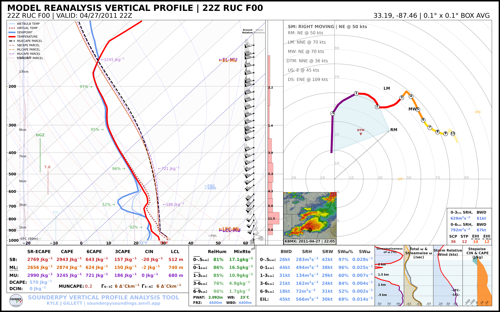
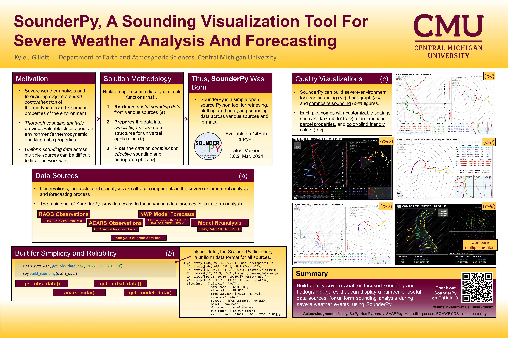

📖 About
About SounderPy: An Atmospheric Sounding Visualization and Analysis Tool for Python
{kind=link}

Example vertical-profile analysis produced with SounderPy.
SounderPy is a simple, open-source Python package for retrieving, analyzing, and plotting atmospheric vertical-profile (sounding) data. Built with simplicity and reliability in mind, SounderPy’s goal is to provide a uniform method for sounding analysis across multiple data types and use cases.
Severe-weather analysis and forecasting require an understanding of the thermodynamic and kinematic properties of the environment. SounderPy supports this workflow through robust data access, atmospheric calculations, and custom visualizations designed specifically for severe-weather analysis and forecasting.
SounderPy can retrieve and plot:
model forecast profiles;
observed radiosonde profiles;
Aircraft Communications Addressing and Reporting System (ACARS) profiles;
model analysis and reanalysis profiles; and
supported custom and numerical-model profiles.
Much of this functionality can be completed in only a few lines of Python, making SounderPy approachable for both new and experienced Python users.
SounderPy builds on a number of scientific Python libraries, including NumPy, Matplotlib, xarray, MetPy, SciPy, and SHARPpy. The project is available through GitHub and PyPI and is distributed under the MIT License.
Read more about SounderPy in its Journal of Open Source Software article:
SounderPy: An atmospheric sounding visualization and analysis tool for Python.
{kind=link}

Overview of the SounderPy project and its capabilities. Presented to the Iowa Severe Storms and Doppler Radar Conference, 2023
Community and Use
SounderPy has been used by several institutions. For example, the tool has been implemented by the Des Moines, Columbia, Grand Forks, Little Rock, Omaha, and Grand Rapids National Weather Service offices; the State University of New York at Albany; Mississippi State University; the University of North Dakota; and others.
Students at a number of universities have also used SounderPy in projects, posters, theses, and papers, including students at the University of Oklahoma, Ohio State University, Central Michigan University, Iowa State University, Texas A&M University, and Rizal Technological University.
☕ SounderPy is an open-source package developed independently. If you would like to support continued development, consider buying me a coffee.
Citing SounderPy
If SounderPy contributes to your research, please cite the SounderPy Journal of Open Source Software article.
AMS-style citation
Gillett, K. J., 2025: SounderPy: An atmospheric sounding visualization and analysis tool for Python. J. Open Source Software, 10 (112), 8087, https://doi.org/10.21105/joss.08087.

BibTeX
@article{Gillett2025SounderPy,
author = {Gillett, Kyle J.},
title = {SounderPy: An atmospheric sounding visualization and analysis tool for Python},
journal = {Journal of Open Source Software},
year = {2025},
volume = {10},
number = {112},
pages = {8087},
doi = {10.21105/joss.08087},
url = {https://doi.org/10.21105/joss.08087}
}
Useful Links
Getting Started
Ready to use SounderPy?
References
SounderPy relies on a number of open-source scientific Python projects. Key references include:
Harris, C. R., K. J. Millman, S. J. van der Walt, and Coauthors, 2020: Array programming with NumPy. Nature, 585, 357–362, https://doi.org/10.1038/s41586-020-2649-2.
Hoyer, S., and J. Hamman, 2017: xarray: N-D labeled arrays and datasets in Python. Journal of Open Research Software, 5 (1), 10, https://doi.org/10.5334/jors.148.
Hunter, J. D., 2007: Matplotlib: A 2D graphics environment. Computing in Science & Engineering, 9 (3), 90–95.
May, R. M., S. C. Arms, P. Marsh, E. Bruning, J. R. Leeman, K. Goebbert, J. E. Thielen, Z. S. Bruick, and M. D. Camron, 2023: MetPy: A Python package for meteorological data. Unidata, https://doi.org/10.5065/D6WW7G29.
May, R. M., S. C. Arms, J. R. Leeman, and J. Chastang, 2017: Siphon: A collection of Python utilities for accessing remote atmospheric and oceanic datasets. Unidata, https://doi.org/10.5065/D6CN72NW.
Virtanen, P., R. Gommers, T. E. Oliphant, and Coauthors, 2020: SciPy 1.0: Fundamental algorithms for scientific computing in Python. Nature Methods, 17 (3), 261–272.
Marsh, P., K. Halbert, G. Blumberg, T. Supinie, R. Esmaili, and J. Szkodzinski: SHARPpy: Sounding/Hodograph Analysis and Research Program in Python. GitHub.
Publications Using SounderPy
Barton, B., and C. Gormley, 2025: Analysis of strongly tornadic environments in Central and Eastern Europe utilizing ERA5 reanalysis data. M.S. thesis, University of Oklahoma.
Capuli, G., M. A. Noveno, and M. P. Ibañez, 2025: A case study of the tornadic supercell in the Province of Pampanga, Philippines (27 May 2024). arXiv, https://doi.org/10.48550/arXiv.2504.20559.
Capuli, G. H., 2024: Friday the 13th hailstorm in the province of Bulacan, Philippines (13 August 2021): A case study. arXiv, https://arxiv.org/abs/2412.09307.
Capuli, G., 2024: Project Severe Weather Archive of the Philippines (SWAP) Part 1: Establishing a baseline climatology for severe weather across the Philippine Archipelago. Ann. Geophys., 67 (5), GC553, https://doi.org/10.4401/ag-9151.
Coffer, B. E., M. D. Parker, M. C. Coniglio, and C. R. Homeyer, 2025: Supercell environments using GridRad-Severe and the HRRR: Addressing discrepancies between prior tornado datasets. Wea. Forecasting, 40, 1405–1428, https://doi.org/10.1175/WAF-D-24-0251.1.
Hua, Z., A. Anderson-Frey, M. C. Brown, and Q. Jiang, 2025: A data-driven explainable framework for diagnosing cluster assignments of right-moving tornadic supercell soundings. Preprint, 4 Jul 2025.
Ibañez, M. P. A., J. A. Manalo, G. H. Capuli, and Coauthors, 2025: Spatiotemporal analysis of hail events in the Philippines. Asia-Pac. J. Atmos. Sci., 61, 24, https://doi.org/10.1007/s13143-025-00409-4.
Kramer, A. D., 2025: The influence of complex terrain on the Turin, New York tornado of 2023. Atmospheric and Environmental Sciences Honors Program, 1, University at Albany, https://scholarsarchive.library.albany.edu/cas-daes-honors/1.
Logan, T., X. Dong, B. Xi, X. Zheng, L. Wu, A. Abramowitz, and Coauthors, 2024: Assessing radiative impacts of African smoke aerosols over the southeastern Atlantic Ocean. Earth Space Sci., 11, e2023EA003138, https://doi.org/10.1029/2023EA003138.
Logan, T., J. Hale, S. Butler, B. Lawrence, and S. Gardner, 2024: Occurrence of rare lightning events during Hurricane Nicholas (2021). Earth Space Sci., 11, e2024EA003733, https://doi.org/10.1029/2024EA003733.
Logan, T., B. Smith, K. Calindi, C. White, and I. Jones, 2025: Comparison study of the electrical nature of two smoke-enhanced sea-breeze thunderstorm cases during TRACER. J. Geophys. Res. Lett., submitted.
O’Neill, E., 2025: The sensitivity of the impact of cell mergers on supercell thunderstorms before versus after sunset. M.S. thesis, Department of Earth Science, University of North Carolina at Charlotte, Charlotte, NC.
Staněk, M., 2024: Podmínky při vývoji weak-forcing derech ve střední Evropě. M.S. thesis, Department of Physical Geography and Geoecology, Faculty of Science, Charles University, Prague, Czech Republic.
Yattoni, A., 2024: The horizontal displacement of Macomb’s X-band and Davenport and Lincoln’s S-band radar images caused by atmospheric conditions. Master’s thesis, Department of Earth, Atmospheric, and Geographic Information Sciences, Western Illinois University. Available from ProQuest Dissertations & Theses Global.